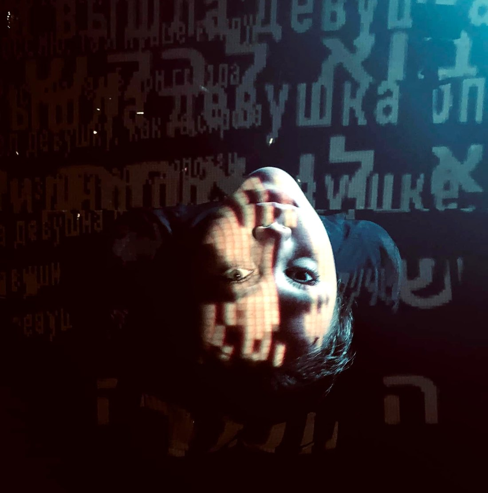
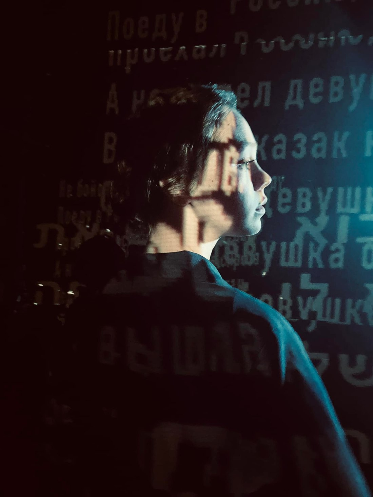
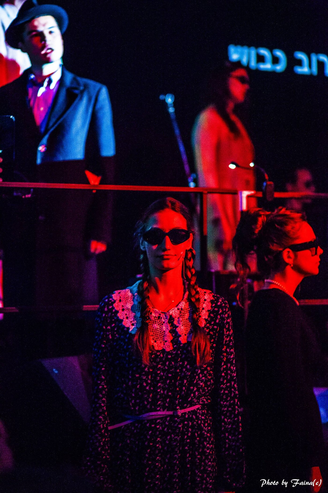
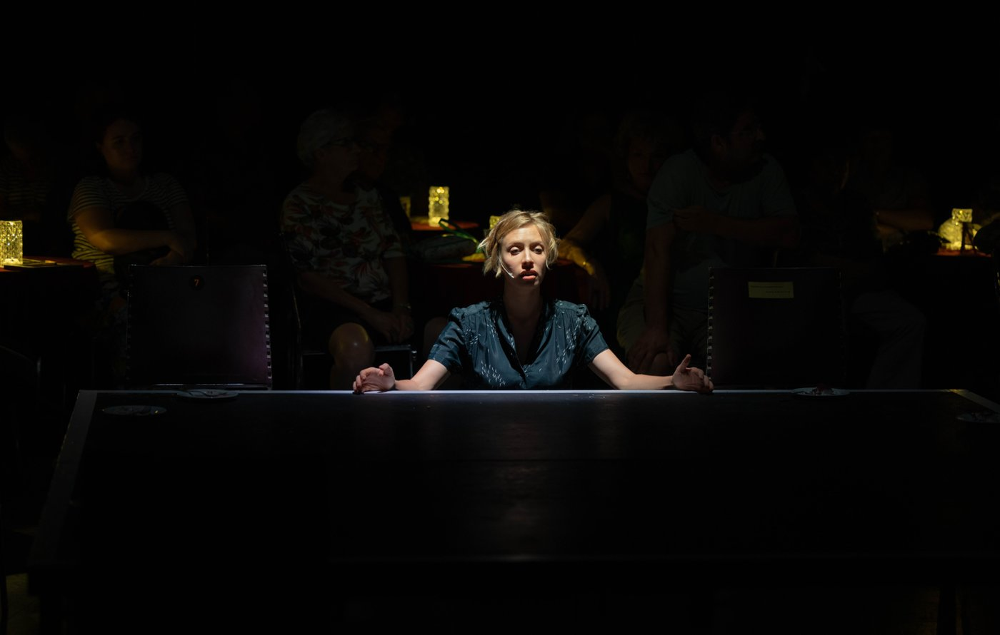
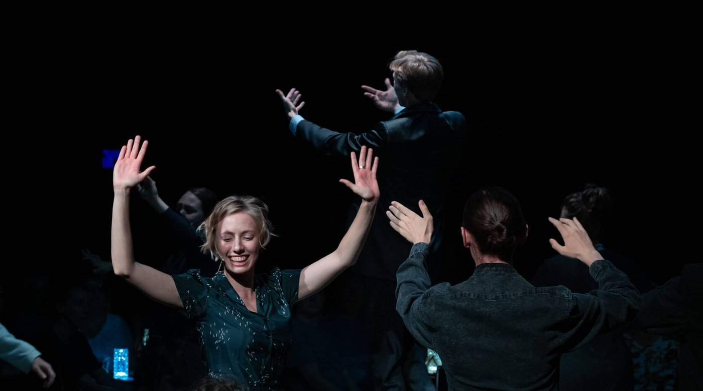
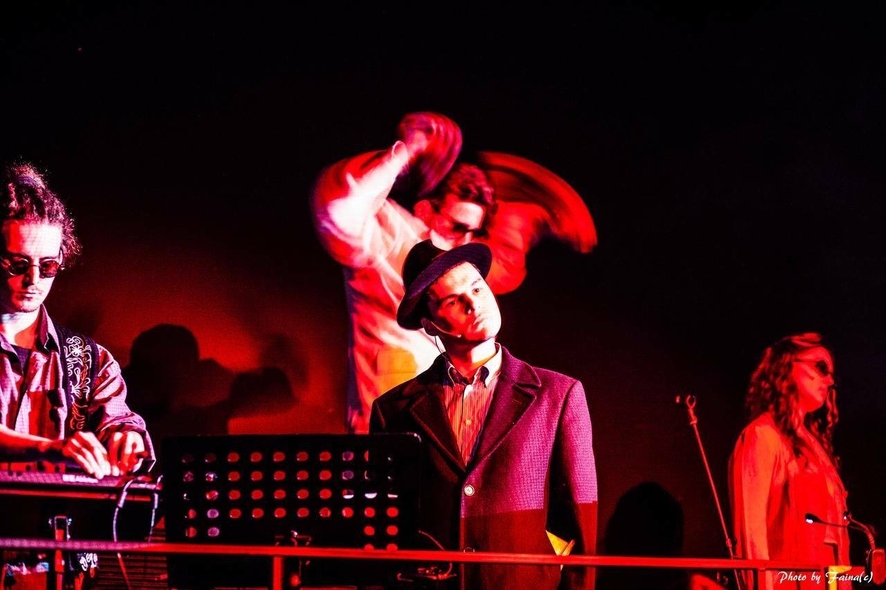
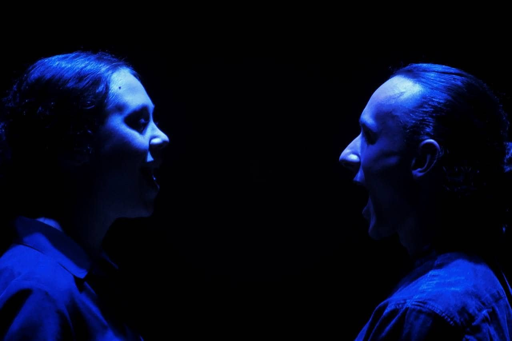

תקציר
קברט מוזיקלי־דרמטי המבוסס על שירים ששרדו בפי עדי השואה — שירים אותנטיים מארכיון פורטונוף באוניברסיטת ייל, המושמעים לא כשרידי עבר אלא כעדויות חיות. מבצעים צעירים הופכים קולות מהגטאות ומהמחנות להמנון של דור המתמודד עם מלחמותיו וחרדותיו שלו.
צוות
- בימוי: דריה שמינה
- וידאו־ארט ועיצוב הקרנות: ניק דריידן
- הפקה: פולקרו בתמיכת תיאטרון גשר (האנגר גשר) · בכורה: מרץ 2023
קונספט חזותי
עיצוב המולטימדיה של דריידן לא היה רקע אלא המנוע הרגשי של המופע. במהלך השירים עלו על המסכים מילים בשש שפות — רוסית, אוקראינית, יידיש, פולנית, גרמנית ועברית — כמצבות, כעדויות, כשברי זיכרון קולקטיבי. תצלומי ארכיון ותיעוד מלחמה התמזגו בצלליות המבצעים, וגופם נשא, פשוטו כמשמעו, את משא הזיכרון; ברגעים אחרים התנפצו הדימויים להבזקי אור וצל מופשטים — זיכרון מתפרק, טראומה עולה. נוצר עולם חזותי רב־שכבתי שבו וידאו ושיר בלתי־נפרדים: ההקרנות עשו את העבר נוכח.
גלריה






